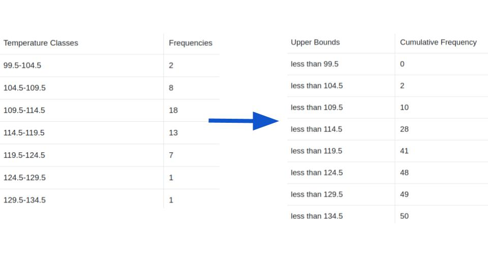
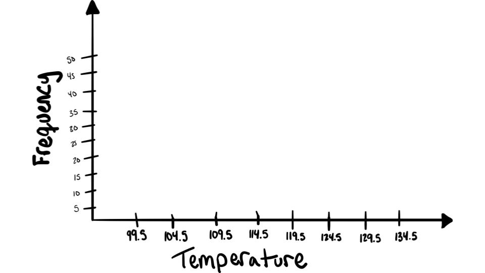
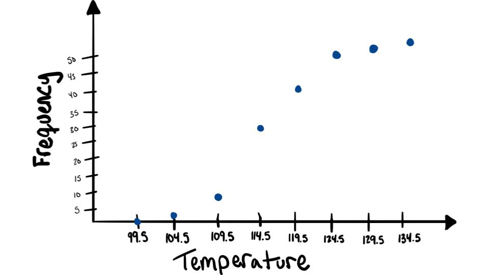

We will once again use the hottest days data from the Now You Try! activity for frequency tables.
Step 1: Find the cumulative frequency for each class.

Step 2: Draw the \(x\) and \(y\) axes. Label the \(x\) axis with the class boundaries. Use an appropriate scale for the \(y\) axis to represent the cumulative frequencies.

Step 3: Plot the cumulative frequency at each upper class boundary.

Step 4: Connect adjacent points with line segments. (connect the dots!)